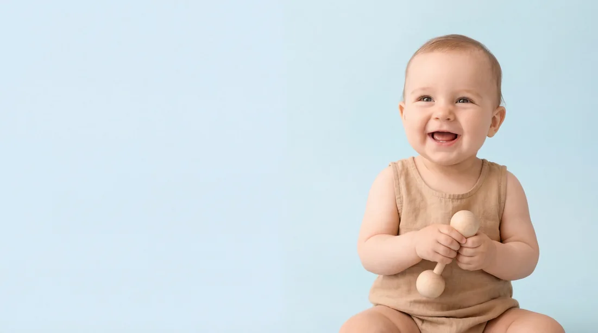
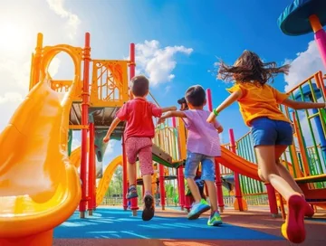
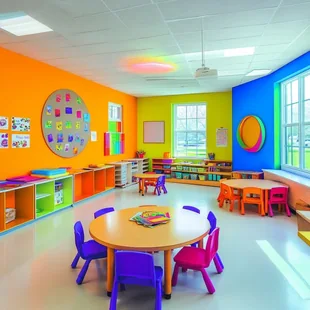
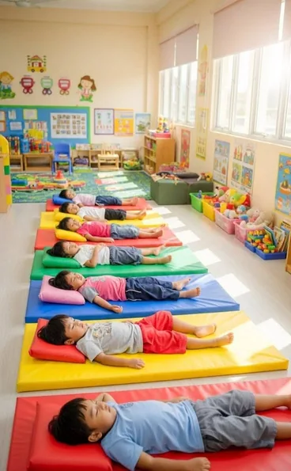
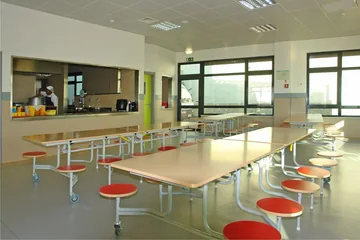

بيئة آمنة
فضاء آمن ومريح يمنح كل طفل الطمأنينة والحرية للاكتشاف.
كل طفل يحمل في داخله بذرة نجاح، ودورنا أن نساعدها على أن تنمو.
واحتي الصغيرة فضاء تربوي دافئ وآمن، نهتم بتربية الأطفال وتنمية مهاراتهم من خلال التعلم، اللعب والأنشطة الإبداعية، في بيئة محفزة تساعد كل طفل على النمو واكتشاف قدراته.
نؤمن أن الطفولة أجمل بداية، لذلك نهيّئ فضاء يشعر فيه الأطفال بالأمان والاهتمام، ويجدون فيه فرصتهم للتعلم واللعب واكتشاف العالم من حولهم.
فضاء آمن ومريح يمنح كل طفل الطمأنينة والحرية للاكتشاف.
اهتمام فردي يراعي احتياجات كل طفل ويحتضن خطواته الأولى.
أنشطة ممتعة تفتح أبواب المعرفة والخيال بطريقة طبيعية.
نعتني بتطور الطفل الفكري والاجتماعي والإبداعي معاً.
برامج متكاملة ترافق طفلكم في خطواته الأولى، من الرعاية المبكرة إلى الاستعداد للمدرسة.

من 6 أشهر إلى سنتين ونصف
رعاية دافئة تواكب نمو الصغار، وتمنحهم مساحة آمنة للتفاعل والاكتشاف وتطوير مهاراتهم الأولى.
سجّل طفلك3 / 4 / 5 سنوات
رحلة تجمع التعلم والإبداع والاستقلالية والتواصل، لتهيئة الأطفال بثقة لمرحلتهم المدرسية القادمة.
سجّل طفلككل يوم فرصة جديدة ليتعلم أطفالنا ويبدعوا ويلعبوا معاً.
حروف وأرقام واكتشافات صغيرة تجعل التعلم رحلة ممتعة.
مساحة للرسم والألوان والتعبير عن الخيال بحرية.
ألعاب هادفة تنمي التركيز والتفكير وروح المبادرة.
حركة ولعب يساعدان على تنمية التوازن والتنسيق.
لحظات مشاركة تنمي التواصل والتعاون والثقة بالنفس.
ذكريات جميلة نصنعها معاً في كل مناسبة مميزة.
صور من عالم مليء بالتعلم واللعب والإبداع.
فضاءات صممت لترافق كل لحظة في يوم طفلكم.

مساحة تفتح المجال للحركة والمرح والاكتشاف.

قاعات مهيأة للتعلم والأنشطة اليومية.

مكان هادئ ومريح لأوقات الراحة.

فضاء مخصص لوجبات الأطفال اليومية.
يسعدنا أن نكون جزءاً من بداية طفلكم. املؤوا المعلومات وسنكون سعداء بالتواصل معكم.
فريقنا متاح للإجابة عن استفساراتكم حول التسجيل والأقسام.
تواصل معنا عبر WhatsAppاملؤوا البيانات الأساسية لبدء المحادثة معنا عبر WhatsApp.
نحرص على الاستماع إلى ملاحظاتكم واقتراحاتكم من أجل تحسين خدمات روض واحتي الصغيرة.
تُدرس الشكايات والاقتراحات من طرف الإدارة، ونتواصل معكم في أقرب وقت.
املؤوا المعلومات التالية وسنعود إليكم.
نتطلع إلى استقبالكم والتعرف على أطفالكم. تواصلوا معنا أو زورونا في عنواننا.
المركز الاجتماعي الفضل، 1 عمالة مقاطعات مولاي رشيد
من الاثنين إلى الجمعة · من 08:00 إلى 18:00